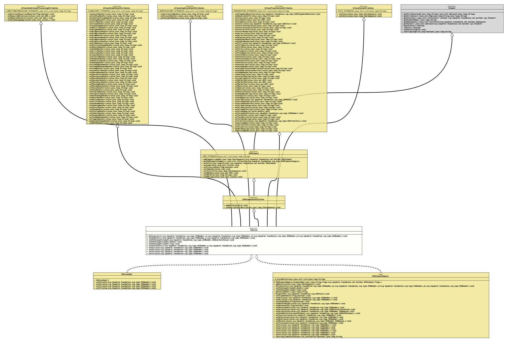

- All Superinterfaces:
AllowsConditionalProcessingAttributes,AllowsGlobalEventAttributes,AllowsGraphicalEventAttributes,AllowsPresentationAttributes,AllowsStyleAttributes,Element,SVGElement,SVGElementWithChildren
- All Known Implementing Classes:
SVGElementAdapter,SVGGenericElement,SVGLineImpl
@ClassVersion(sourceVersion="$Id: SVGLine.java 1074 2023-10-02 12:05:06Z tquadrat $")
@API(status=STABLE,
since="0.0.5")
public sealed interface SVGLine
extends SVGElementWithChildren, AllowsConditionalProcessingAttributes, AllowsGlobalEventAttributes, AllowsGraphicalEventAttributes, AllowsPresentationAttributes, AllowsStyleAttributes
permits SVGElementAdapter, SVGLineImpl
{kind=link}
The definition of an SVG
<line> element.- Author:
- Thomas Thrien (thomas.thrien@tquadrat.org)
- Version:
- $Id: SVGLine.java 1074 2023-10-02 12:05:06Z tquadrat $
- Since:
- 0.0.5
- UML Diagram
-

UML Diagram for "org.tquadrat.foundation.svg.SVGLine"
{kind=link}
-
Field Summary
Fields inherited from interface org.tquadrat.foundation.svg.AllowsConditionalProcessingAttributes
CONDITIONALPROCESSING_ATTRIBUTESFields inherited from interface org.tquadrat.foundation.svg.AllowsGlobalEventAttributes
GLOBALEVENT_ATTRIBUTESFields inherited from interface org.tquadrat.foundation.svg.AllowsGraphicalEventAttributes
GRAPHICALEVENT_ATTRIBUTESFields inherited from interface org.tquadrat.foundation.svg.AllowsPresentationAttributes
PRESENTATION_ATTRIBUTESFields inherited from interface org.tquadrat.foundation.svg.AllowsStyleAttributes
STYLE_ATTRIBUTESFields inherited from interface org.tquadrat.foundation.svg.SVGElement
CORE_ATTRIBUTES -
Method Summary
Modifier and TypeMethodDescriptiondefault voiddefineLine(SVGNumber x1, SVGNumber y1, SVGNumber x2, SVGNumber y2) Sets the start and end points for this line.default voidsetEndPoint(SVGNumber x, SVGNumber y) Sets the end point for this line.default voidsetPathLength(double length) Sets the length of the path represented by this SVG<line>element.default voidsetPathLength(long length) Sets the length of the path represented by this SVG<line>element.voidSets the length of the path represented by this SVG<line>element.default voidsetStartPoint(SVGNumber x, SVGNumber y) Sets the start point for this line.voidSets the x coordinate of the starting point for this line.voidSets the x coordinate of the ending point for this line.voidSets the y coordinate of the starting point for this line.voidSets the y coordinate of the ending point for this line.Methods inherited from interface org.tquadrat.foundation.svg.AllowsConditionalProcessingAttributes
setExternalResourcesRequired, setRequiredExtensions, setRequiredFeatures, setSystemLanguageMethods inherited from interface org.tquadrat.foundation.svg.AllowsGlobalEventAttributes
setCancelHandler, setCanPlayHandler, setCanPlayThroughHandler, setChangeHandler, setClickHandler, setCloseHandler, setCueChangeHandler, setDblClickHandler, setDragEndHandler, setDragEnterHandler, setDragExitHandler, setDragHandler, setDragLeaveHandler, setDragOverHandler, setDragStartHandler, setDropHandler, setDurationChangeHandler, setEmptiedHandler, setEndedHandler, setErrorHandler, setFocusHandler, setInputHandler, setInvalidHandler, setKeyDownHandler, setKeyPressHandler, setKeyUpHandler, setLoadedDataHandler, setLoadedMetadataHandler, setLoadHandler, setLoadStartHandler, setMouseDownHandler, setMouseEnterHandler, setMouseLeaveHandler, setMouseMoveHandler, setMouseOutHandler, setMouseOverHandler, setMouseUpHandler, setMouseWheelHandler, setPauseHandler, setPlayHandler, setPlayingHandler, setProgressHandler, setRateChangeHandler, setResetHandler, setResizeHandler, setScrollHandler, setSeekedHandler, setSeekingHandler, setSelectHandler, setShowHandler, setStalledHandler, setSubmitHandler, setSuspendHandler, setTimeUpdateHandler, setToggleHandler, setVolumeChangeHandler, setWaitHandlerMethods inherited from interface org.tquadrat.foundation.svg.AllowsGraphicalEventAttributes
setActivationHandler, setFocusInHandler, setFocusOutHandlerMethods inherited from interface org.tquadrat.foundation.svg.AllowsPresentationAttributes
setAlignmentBaseline, setBaselineShift, setClip, setClipPath, setClipRule, setColor, setColorInterpolation, setColorInterpolationFilters, setColorProfile, setColorRendering, setCursor, setDirection, setDisplay, setDominantBaseline, setEnableBackground, setFill, setFillOpacity, setFillRule, setFilter, setFloodColor, setFloodOpacity, setFontFamily, setFontSize, setFontSizeAdjust, setFontStretch, setFontStyle, setFontVariant, setFontWeight, setGlyphOrientationHorizontal, setGlyphOrientationVertical, setImageRendering, setKerning, setLetterSpacing, setLightingColor, setMarkerEnd, setMarkerMid, setMarkerStart, setMask, setOpacity, setOverflow, setPointerEvents, setShapeRendering, setStopColor, setStopOpacity, setStroke, setStrokeDashArray, setStrokeDashOffset, setStrokeLineCap, setStrokeLineJoin, setStrokeMiterLimit, setStrokeOpacity, setStrokeWidth, setTextAnchor, setTextDecoration, setTextRendering, setTransform, setUnicodeBidi, setVectorEffect, setVisibility, setWordSpacing, setWritingModeMethods inherited from interface org.tquadrat.foundation.svg.AllowsStyleAttributes
setClass, setStyleMethods inherited from interface org.tquadrat.foundation.xml.builder.spi.Element
getAttribute, getAttributes, getChildren, getElementName, getNamespaces, getParent, hasChildren, isBlock, setParent, toStringMethods inherited from interface org.tquadrat.foundation.svg.SVGElement
addComment, getSVGElementCategory, setId, setLang, setPreserveSpace, setTabIndex, setTitle, setXMLBase, setXMLId, setXMLLangMethods inherited from interface org.tquadrat.foundation.svg.SVGElementWithChildren
addChild, setDescription
){kind=link}
){kind=link}
){kind=link}
){kind=link}
){kind=link}
){kind=link}
){kind=link}
){kind=link}
){kind=link}
){kind=link}
){kind=link}
){kind=link}
){kind=link}
){kind=link}
-
Method Details
-
defineLine
Sets the start and end points for this line.- Parameters:
x1- The x coordinate for the starting point of the line.y1- The y coordinate for the starting point of the line.x2- The x coordinate for the ending point of the line.y2- The y coordinate for the ending point of the line.
-
setEndPoint
Sets the end point for this line.- Parameters:
x- The x coordinate for the ending point of the line.y- The y coordinate for the ending point of the line.
-
setPathLength
Sets the length of the path represented by this SVG<line>element.- Parameters:
length- The author's computation of the total length of the path, in user units. This type is used to calibrate the user agent's own distance-along-a-path calculations with that of the author. The user agent will scale all distance-along-a-path computations by the ratio of this type to the user agent's own computed type for total path length.
A type of zero is valid, but a negative type is an error.- Throws:
IllegalArgumentException- The type is less than 0.
-
setPathLength
Sets the length of the path represented by this SVG<line>element.- Parameters:
length- The author's computation of the total length of the path, in user units. This type is used to calibrate the user agent's own distance-along-a-path calculations with that of the author. The user agent will scale all distance-along-a-path computations by the ratio of this type to the user agent's own computed type for total path length.
A type of zero is valid, but a negative type is an error.- Throws:
IllegalArgumentException- The type is less than 0.
-
setPathLength
Sets the length of the path represented by this SVG<line>element.- Parameters:
length- The author's computation of the total length of the path, in user units. This type is used to calibrate the user agent's own distance-along-a-path calculations with that of the author. The user agent will scale all distance-along-a-path computations by the ratio of this type to the user agent's own computed type for total path length.
A type of zero is valid, but a negative type is an error.- Throws:
IllegalArgumentException- The type is less than 0.
-
setStartPoint
Sets the start point for this line.- Parameters:
x- The x coordinate for the starting point of the line.y- The y coordinate for the starting point of the line.
-
setX1
Sets the x coordinate of the starting point for this line.- Parameters:
value- The x coordinate.
-
setX2
Sets the x coordinate of the ending point for this line.- Parameters:
value- The x coordinate.
-
setY1
Sets the y coordinate of the starting point for this line.- Parameters:
value- The y coordinate.
-
setY2
Sets the y coordinate of the ending point for this line.- Parameters:
value- The y coordinate.
-
{kind=link}
{kind=link}
{kind=link}
{kind=link}
{kind=link}
{kind=link}
{kind=link}
{kind=link}
{kind=link}
{kind=link}